File System
In questo capitolo imparerai come lavorare con i filesystems.
Partizionamento
Il partizionamento consente l'installazione di diversi sistemi operativi, poiché è impossibile far convivere più sistemi operativi sulla stessa unità logica. Il partizionamento consente anche di separare i dati dal punto di vista logico (sicurezza, ottimizzazione degli accessi, ...).
La divisione del disco fisico in volumi partizionati è registrata nella tabella delle partizioni, memorizzata nel primo settore del disco (MBR: Master Boot Record).
Per i formati di tabelle di partizione MBR, lo stesso disco fisico può essere suddiviso in un massimo di 4 partizioni:
- Partizione primaria (o partizione principale)
- Partizione estesa
Attenzione
Per ogni disco fisico può esserci una sola partizione estesa, cioè un disco fisico può avere nella tabella delle partizioni MBR fino a un massimo di:
- Tre partizioni primarie più una partizione estesa
- Quattro partizioni primarie
La partizione estesa non può scrivere dati e formattare e può contenere solo partizioni logiche. Il disco fisico più grande che può essere riconosciuto dalla tabella delle partizioni MBR è di 2 TB.
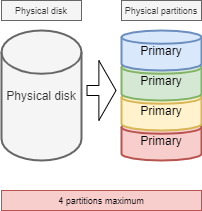
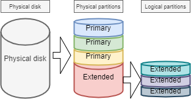
Convenzioni di denominazione per i nomi dei file del dispositivo
Nel mondo di GNU/Linux, tutto è un file. Per i dischi, vengono riconosciuti dal sistema come:
| Hardware | Nome del file del dispositivo |
|---|---|
| Disco rigido IDE | /dev/hd[a-d] |
| Disco rigido SCSI/SATA/USB | /dev/sd[a-z] |
| Unità ottica | /dev/cdrom or /dev/sr0 |
| Floppy disk | /dev/fd[0-7] |
| Stampante (25 pin) | /dev/lp[0-2...] |
| Stampante (USB) | /dev/usb/lp[0-15] |
| Mouse | /dev/mouse |
| Disco rigido virtuale | /dev/vd[a-z] |
Il kernel Linux contiene i driver per la maggior parte dei dispositivi hardware.
Quelli che chiamiamo dispositivi sono i file, memorizzati senza /dev, che identificano i diversi hardware rilevati dalla scheda madre.
Il servizio udev è responsabile dell'applicazione delle convenzioni di denominazione (regole) e della loro applicazione ai dispositivi rilevati.
Per ulteriori informazioni, vedere qui.
Numero di partizione del dispositivo
Il numero dopo il dispositivo di blocco (dispositivo di memorizzazione) indica una partizione. Per le tabelle di partizione MBR, il numero 5 deve essere la prima partizione logica.
Attenzione
Attenzione prego! Il numero di partizione citato si riferisce principalmente al numero di partizione del dispositivo a blocchi (dispositivo di archiviazione).
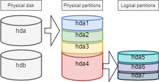
Esistono almeno due comandi per il partizionamento di un disco: fdisk e cfdisk. Entrambi i comandi hanno un menu interattivo. cfdisk è più affidabile e meglio ottimizzato, quindi è il migliore da usare.
L'unica ragione per usare fdisk è quando si vogliono elencare tutti i dispositivi logici con l'opzione -l. fdisk utilizza tabelle di partizione MBR, pertanto non è supportato per le tabelle di partizione GPT e non può essere usato per dischi di dimensioni superiori a 2 TB.
sudo fdisk -l
sudo fdisk -l /dev/sdc
sudo fdisk -l /dev/sdc2
comando parted
Il comando parted (partition editor) è in grado di partizionare un disco senza gli inconvenienti di fdisk.
Il comando parted può essere usato sia dalla riga di comando che in modo interattivo. Dispone inoltre di una funzione di recupero in grado di riscrivere una tabella di partizione cancellata.
parted [-l] [device]
Come interfaccia grafica, c'è il completissimo strumento gparted: Gnome PARtition EDitor.
Il comando gparted -l elenca tutti i dispositivi logici di un computer.
Il comando gparted, se eseguito senza argomenti, mostrerà una modalità interattiva con le sue opzioni interne:
helpo un comando errato visualizzerà queste opzioni.print allin questa modalità avrà lo stesso risultato digparted -ldalla riga di comando.quitper tornare al prompt.
comando cfdisk
Il comando cfdisk viene utilizzato per gestire le partizioni.
cfdisk device
Esempio:
$ sudo cfdisk /dev/sda
Disk: /dev/sda
Size: 16 GiB, 17179869184 bytes, 33554432 sectors
Label: dos, identifier: 0xcf173747
Device Boot Start End Sectors Size Id Type
>> /dev/sda1 * 2048 2099199 2097152 1G 83 Linux
/dev/sda2 2099200 33554431 31455232 15G 8e Linux LVM
lqqqqqqqqqqqqqqqqqqqqqqqqqqqqqqqqqqqqqqqqqqqqqqqqqqqqqqqqqqqqqqqqqqqqqqqqqqqqk
x Partition type: Linux (83) x
x Attributes: 80 x
xFilesystem UUID: 54a1f5a7-b8fa-4747-a87c-2dd635914d60 x
x Filesystem: xfs x
x Mountpoint: /boot (mounted) x
mqqqqqqqqqqqqqqqqqqqqqqqqqqqqqqqqqqqqqqqqqqqqqqqqqqqqqqqqqqqqqqqqqqqqqqqqqqqqj
[Bootable] [ Delete ] [ Resize ] [ Quit ] [ Type ] [ Help ]
[ Write ] [ Dump ]
La preparazione, senza LVM, dei supporti fisici avviene in cinque fasi:
- Impostazione del disco fisico;
- Partizionamento dei volumi (divisione geografica del disco, possibilità di installare più sistemi, ...);
- Creazione dei file system (permette al sistema operativo di gestire i file, la struttura ad albero, i diritti, ...);
- Montaggio dei file system (registrazione del file system nella struttura ad albero);
- Gestire l'accesso degli utenti.
Gestore di volumi logici (LVM)
Logical Volume Manager (LVM])
La partizione creata dalla partizione standard non può regolare dinamicamente le risorse del disco rigido; una volta montata la partizione, la capacità è completamente fissa, questo vincolo è inaccettabile per il server. Anche se la partizione standard può essere espansa o ridotta forzatamente con alcuni mezzi tecnici, è facile che si verifichi una perdita di dati. LVM può risolvere questo problema molto bene. LVM è disponibile in Linux dalla versione 2.4 del kernel e le sue caratteristiche principali sono:
- Capacità del disco più flessibile;
- Movimento di dati online;
- Dischi in modalità stripe;
- Volumi Mirrored (ricopiati);
- Istantanee del volume_(snapshot_).
Il principio di LVM è molto semplice:
- tra il disco fisico (o la partizione del disco) e il file system viene aggiunto un livello di astrazione logica
- unire più dischi (o partizioni di dischi) in un Gruppo di Volumi(VG)
- eseguire le operazioni di gestione del disco su di essi attraverso una funzionalità chiamata Logical Volume(LV).
Il supporto fisico: Il supporto di memorizzazione di LVM può essere l'intero disco rigido, una partizione del disco o un array RAID. Il dispositivo deve essere convertito, o inizializzato, in LVM Physical Volume (PV), prima di poter eseguire ulteriori operazioni.
PV (Physical Volume): Il blocco logico di archiviazione di base di LVM. Per creare un volume fisico, è possibile utilizzare una partizione del disco o il disco stesso.
VG (Volume Group): Simile ai dischi fisici di una partizione standard, un VG è costituito da uno o più PV.
LV (Logical Volume): Simile alle partizioni del disco rigido nelle partizioni standard, il LV è costruito sopra il VG. È possibile impostare un file system su LV.
PE: L'unità di memoria più piccola che può essere allocata in un volume fisico, per impostazione predefinita 4MB. È possibile specificare una dimensione aggiuntiva.
LE: La più piccola unità di memoria che può essere allocata in un Logical Volume. Nella stessa VG, PE e LE sono uguali e corrispondono uno a uno.
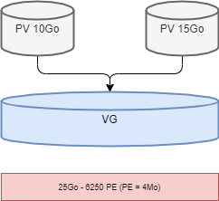
Lo svantaggio è che se uno dei volumi fisici va fuori servizio, tutti i volumi logici che utilizzano questo volume fisico vanno persi. È necessario utilizzare LVM sui dischi raid.
Nota
LVM è gestito solo dal sistema operativo. Pertanto il BIOS ha bisogno di almeno una partizione senza LVM per l'avvio.
Informazione
Nel disco fisico, l'unità di memorizzazione più piccola è il sector; nel file system, l'unità di memorizzazione più piccola di GNU/Linux è il block, che è chiamato cluster nel sistema operativo Windows; nel RAID, l'unità di memorizzazione più piccola è il chunk.
Il Meccanismo di Scrittura di LVM
Per l'archiviazione dei dati in LV esistono diversi meccanismi di memorizzazione, due dei quali sono:
- Volumi lineari;
- Volumi in modalità stripe;
- Volumi Mirrored.
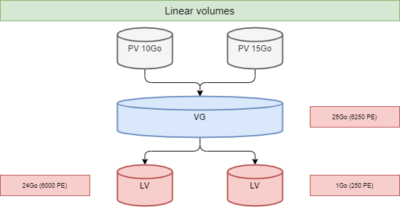
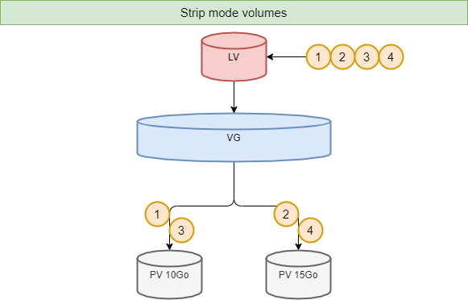
Comandi LVM per la gestione dei volumi
I principali comandi rilevanti sono i seguenti:
| Elemento | PV | VG | LV |
|---|---|---|---|
| scan | pcscan | vgscan | lvscan |
| create | pvcreate | vgcreate | lvcreate |
| display | pvdisplay | vgdisplay | lvdisplay |
| remove | pvremove | vgremove | lvremove |
| extend | vgextend | lvextend | |
| reduce | vgreduce | lvreduce | |
| informazioni sintetiche | pvs | vgs | lvs |
comando pvcreate
Il comando pvcreate viene utilizzato per creare volumi fisici. Trasforma le partizioni (o i dischi) di Linux in volumi fisici.
pvcreate [-opzioni] partizione
Esempio:
[root]# pvcreate /dev/hdb1
pvcreate -- physical volume « /dev/hdb1 » successfully created
È anche possibile utilizzare un disco intero (il che facilita l'aumento delle dimensioni del disco in ambienti virtuali, ad esempio).
[root]# pvcreate /dev/hdb
pvcreate -- physical volume « /dev/hdb » successfully created
# It can also be written in other ways, such as
[root]# pvcreate /dev/sd{b,c,d}1
[root]# pvcreate /dev/sd[b-d]1
| Opzione | Descrizione |
|---|---|
-f |
Forza la creazione del volume (disco già trasformato in volume fisico). Usare con estrema cautela. |
comando vgcreate
Il comando vgcreate viene utilizzato per creare gruppi di volumi. Raggruppa uno o più volumi fisici in un gruppo di volumi.
vgcreate <VG_name> <PV_name...> [opzione]
Esempio:
[root]# vgcreate volume1 /dev/hdb1
…
vgcreate – volume group « volume1 » successfully created and activated
[root]# vgcreate vg01 /dev/sd{b,c,d}1
[root]# vgcreate vg02 /dev/sd[b-d]1
comando lvcreate
Il comando lvcreate crea volumi logici. Il file system viene quindi creato su questi volumi logici.
lvcreate -L size [-n name] VG_name
Esempio:
[root]# lvcreate –L 600M –n VolLog1 volume1
lvcreate -- logical volume « /dev/volume1/VolLog1 » successfully created
| Opzione | Descrizione |
|---|---|
-L size |
Imposta la dimensione del volume logico in K, M o G. |
-n name |
Imposta il nome del LV. File speciale creato in /dev/nome_volume con questo nome. |
-l numero |
Imposta la percentuale della capacità del disco rigido da utilizzare. È possibile utilizzare anche il numero di PE. Un PE equivale a 4 MB. |
Informazione
Dopo aver creato un volume logico con il comando lvcreate, la regola di denominazione del sistema operativo è - /dev/VG_name/LV_name, questo tipo di file è un soft link (altrimenti noto come link simbolico). Il file di collegamento punta a file come /dev/dm-0 e /dev/dm-1.
Comandi LVM per visualizzare le informazioni sui volumi
comando pvdisplay
Il comando pvdisplay consente di visualizzare le informazioni sui volumi fisici.
pvdisplay /dev/PV_name
Esempio:
[root]# pvdisplay /dev/PV_name
comando vgdisplay
Il comando vgdisplay consente di visualizzare le informazioni sui gruppi di volumi.
vgdisplay VG_name
Esempio:
[root]# vgdisplay volume1
comando lvdisplay
Il comando lvdisplay consente di visualizzare le informazioni sui volumi logici.
lvdisplay /dev/VG_name/LV_name
Esempio:
[root]# lvdisplay /dev/volume1/VolLog1
Preparazione dei supporti fisici
La preparazione con LVM del supporto fisico si articola come segue:
- Impostazione del disco fisico
- Partizione dei volumi
- Volume fisico LVM
- Gruppi di volumi LVM
- Volumi logici LVM
- Creazione di file system
- Montaggio dei file system
- Gestire l'accesso degli utenti
Struttura di un file system
Un FS del file system è responsabile delle seguenti azioni:
- Protezione dei diritti di accesso e modifica dei file;
- Manipolazione dei file: creazione, lettura, modifica e cancellazione;
- Individuazione dei file sul disco;
- Gestione dello spazio della partizione.
Il sistema operativo Linux è in grado di utilizzare diversi file system (ext2, ext3, ext4, FAT16, FAT32, NTFS, HFS, BtrFS, JFS, XFS, ...).
comando mkfs
Il comando mkfs(make file system) consente di creare un file system Linux.
mkfs [-t fstype] filesys
Esempio:
[root]# mkfs -t ext4 /dev/sda1
| Opzione | Descrizione |
|---|---|
-t |
Indica il tipo di file system da utilizzare. |
Attenzione
Senza un file system non è possibile utilizzare lo spazio su disco.
Ogni file system ha una struttura identica su ogni partizione. Un Boot Sector e un Super block inizializzati dal sistema, quindi una Inode table e un Data block inizializzati dall'amministratore.
Nota
L'unica eccezione è la partizione swap.
Boot sector
Il boot sector è il primo settore del supporto di memorizzazione avviabile, ovvero cilindro 0, traccia 0, settore 1 (1 settore equivale a 512 byte). Si compone di tre parti:
- MBR (master boot record): 446 byte.
- DPT (tabella di partizione del disco): 64 byte.
- BRID (boot record ID): 2 byte.
| Elemento | Descrizione |
|---|---|
| MBR | Memorizza il "boot loader" (o "GRUB"); carica il kernel, passa i parametri; fornisce un'interfaccia di menu all'avvio; trasferisce a un altro loader, ad esempio quando sono installati più sistemi operativi. |
| DPT | Registra lo stato della partizione dell'intero disco. |
| BRID | Determina se il dispositivo è utilizzabile per l'avvio. |
Super block
La dimensione della tabella del Super block è definita al momento della creazione. È presente in ogni partizione e contiene gli elementi necessari per il suo utilizzo.
Descrive il File System:
- Nome del Volume Logico;
- Nome del File System;
- Tipo di File System;
- Stato del File System;
- Dimensione del File System;
- Numero di blocchi liberi;
- Puntatore all'inizio dell'elenco dei blocchi liberi;
- Dimensione dell'elenco di inode;
- Numero ed elenco degli inode liberi.
Una copia viene caricata nella memoria centrale non appena il sistema viene inizializzato. Questa copia viene aggiornata non appena viene modificata e il sistema la salva periodicamente ( comando sync).
Quando il sistema si arresta, copia anche questa tabella in memoria nel suo blocco.
Tabella degli inode
La dimensione della tabella degli inode è definita al momento della sua creazione ed è memorizzata nella partizione. È costituito da record, chiamati inode, corrispondenti ai file creati. Ogni record contiene gli indirizzi dei blocchi di dati che compongono il file.
Nota
Il numero di inode è unico all'interno di un file system.
Una copia viene caricata nella memoria centrale non appena il sistema viene inizializzato. Questa copia viene aggiornata non appena viene modificata e il sistema la salva periodicamente ( comando sync).
Quando il sistema si arresta, copia anche questa tabella in memoria nel suo blocco.
Un file è gestito dal suo numero di inode.
Nota
La dimensione della tabella degli inode determina il numero massimo di file che il FS può contenere.
Informazioni presenti nella tabella degli inode:
- Numero di inode;
- Tipo di file e autorizzazioni di accesso;
- Numero di identificazione del proprietario;
- Numero di identificazione del gruppo proprietario;
- Numero di collegamenti in questo file;
- Dimensione del file in byte;
- Data dell'ultimo accesso al file;
- Data dell'ultima modifica del file;
- Data dell'ultima modifica dell'inode (= creazione);
- Tabella di diversi puntatori (tabella dei blocchi) ai blocchi logici contenenti i pezzi del file.
Data block
La sua dimensione corrisponde al resto dello spazio disponibile della partizione. Quest'area contiene i cataloghi corrispondenti a ciascuna directory e i blocchi di dati corrispondenti ai contenuti dei file.
Per garantire la coerenza del file system, un'immagine del superblocco e della tabella degli inode viene caricata in memoria (RAM) al momento del caricamento del sistema operativo, in modo che tutte le operazioni di I/O vengano effettuate attraverso queste tabelle di sistema. Quando l'utente crea o modifica i file, questa immagine di memoria viene aggiornata per prima. Il sistema operativo deve quindi aggiornare regolarmente il superblocco del disco logico( comandosync ).
Queste tabelle vengono scritte sul disco rigido quando il sistema viene spento.
Attenzione
In caso di arresto improvviso, il file system potrebbe perdere la sua consistenza e causare la perdita di dati.
Riparazione del file system
È possibile verificare la consistenza di un file system con il comando fsck.
In caso di errori, vengono proposte soluzioni per riparare le incongruenze. Dopo la riparazione, i file che rimangono senza voci nella tabella degli inode vengono allegati alla cartella /lost+found dell'unità logica.
comando fsck
Il comando fsck è uno strumento di controllo e riparazione dell'integrità in modalità console per i file system di Linux.
fsck [-sACVRTNP] [ -t fstype ] filesys
Esempio:
[root]# fsck /dev/sda1
Per controllare la partizione root, è possibile creare un file forcefsck e riavviare o eseguire shutdown con l'opzione -F.
[root]# touch /forcefsck
[root]# reboot
or
[root]# shutdown –r -F now
Attenzione
La partizione da controllare deve essere smontata.
Organizzazione di un file system
Per definizione, un file system è una struttura ad albero di directory costruita a partire da una directory principale (un dispositivo logico può contenere un solo file system).
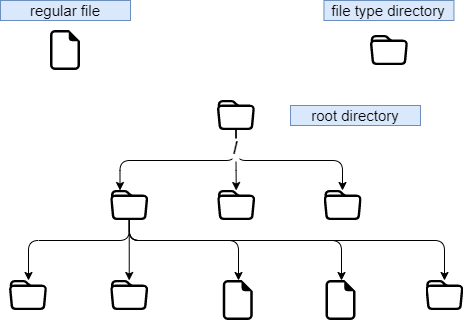
Nota
In Linux tutto è un file.
Documento di testo, directory, binario, partizione, risorsa di rete, schermo, tastiera, kernel Unix, programma utente, ...
Linux rispetta lo standard FHS(Filesystems Hierarchy Standard) (vedi man hier) che definisce i nomi delle cartelle e i loro ruoli.
| Directory | Funzionalità | Abbreviazione di |
|---|---|---|
/ |
Contiene directory speciali | |
/boot |
File relativi all'avvio del sistema | |
/sbin |
Comandi necessari per l'avvio e la riparazione del sistema | binari di sistema |
/bin |
Eseguibili dei comandi di base del sistema | binari |
/usr/bin |
Comandi di amministrazione del sistema | |
/lib |
Librerie condivise e moduli del kernel | librerie |
/usr |
Tutto ciò che non è necessario per il funzionamento minimo del sistema | Risorse di sistema UNIX |
/mnt |
Per il montaggio di SF temporanei | mount |
/media |
Per il montaggio di supporti rimovibili | |
/misc |
Per montare la directory condivisa del servizio NFS. | |
/root |
Directory di accesso dell'amministratore | |
/home |
Dati utente | |
/tmp |
File temporanei | temporanei |
/dev |
File speciali del dispositivo | dispositivo |
/etc |
File di configurazione e scripts | configurazione del testo modificabile |
/opt |
Specifico per le applicazioni installate | opzionale |
/proc |
File system virtuale che rappresenta diversi processi | processi |
/var |
File variabili vari | variabili |
/sys |
File system virtuale, simile a /proc | |
/run |
Questo è /var/run | |
/srv |
Service Data Directory | servizio |
- Per eseguire un montaggio o uno smontaggio, a livello di albero, non ci si deve trovare sotto il suo punto di montaggio.
- Il montaggio su una directory non vuota non cancella il contenuto. È solo nascosta.
- Solo l'amministratore può eseguire il montaggio.
- I punti di montaggio da montare automaticamente all'avvio devono essere inseriti in
/etc/fstab.
file /etc/fstab
Il file /etc/fstab viene letto all'avvio del sistema e contiene i montaggi da eseguire. Ogni file system da montare è descritto su una singola riga, con i campi separati da spazi o tabulazioni.
Nota
Le righe vengono lette in sequenza (fsck, mount, umount).
/dev/mapper/VolGroup-lv_root / ext4 defaults 1 1
UUID=46….92 /boot ext4 defaults 1 2
/dev/mapper/VolGroup-lv_swap swap swap defaults 0 0
tmpfs /dev/shm tmpfs defaults 0 0
devpts /dev/pts devpts gid=5,mode=620 0 0
sysfs /sys sysfs defaults 0 0
proc /proc proc defaults 0 0
1 2 3 4 5 6
| Colonna | Descrizione |
|---|---|
| 1 | Dispositivo del file system(/dev/sda1, UUID=..., ...) |
| 2 | Nome del punto di montaggio, percorso assoluto (eccetto swap) |
| 3 | Tipo di filesystem (ext4, swap, ...) |
| 4 | Opzioni speciali per il montaggio (default, ro, ...) |
| 5 | Abilitare o disabilitare la gestione del backup (0:non eseguito il backup, 1:eseguito il backup) |
| 6 | Ordine di controllo quando si controlla lo SF con il comando fsck (0:nessun controllo, 1:priorità, 2:non priorità) |
Il comando mount -a consente di eseguire il montaggio automatico in base al contenuto del file di configurazione /etc/fstab; le informazioni montate vengono poi scritte in /etc/mtab.
Attenzione
Solo i punti di montaggio elencati in /etc/fstab saranno montati al riavvio. In generale, si sconsiglia di scrivere le unità flash USB e i dischi rigidi rimovibili nel file /etc/fstab, perché quando il dispositivo esterno viene scollegato e riavviato, il sistema segnalerà che il dispositivo non può essere trovato, con conseguente mancato avvio. Quindi cosa dovrei fare? Montaggio temporaneo, ad esempio:
Shell > mkdir /mnt/usb
Shell > mount -t vfat /dev/sdb1 /mnt/usb
# Read the information of the USB flash disk
Shell > cd /mnt/usb/
# When not needed, execute the following command to pull out the USB flash disk
Shell > umount /mnt/usb
Informazione
È possibile fare una copia del file /etc/mtab o copiare il suo contenuto in /etc/fstab.
Se si desidera visualizzare l'UUID del numero di partizione del dispositivo, digitare il seguente comando: lsblk -o name,uuid. UUID è l'abbreviazione di Universally Unique Identifier.
Comandi di gestione del montaggio
comando di montaggio
Il comando mount consente di montare e visualizzare le unità logiche nella struttura.
mount [-option] [device] [directory]
Esempio:
[root]# mount /dev/sda7 /home
| Opzione | Descrizione |
|---|---|
-n |
Imposta il montaggio senza scrivere in /etc/mtab. |
-t |
Indica il tipo di file system da utilizzare. |
-a |
Monta tutti i filesystem menzionati in /etc/fstab. |
-r |
Monta il file system in sola lettura (equivalente a -o ro). |
-w |
Monta il file system in lettura/scrittura, per impostazione predefinita (equivalente a -o rw). |
-o |
Argomento seguito da un elenco di opzioni separate da virgole (remount, ro, ...). |
Nota
Il solo comando mount visualizza tutti i file system montati.
comando umount
Il comando umount viene utilizzato per smontare le unità logiche.
umount [-option] [device] [directory]
Esempio:
[root]# umount /home
[root]# umount /dev/sda7
| Opzione | Descrizione |
|---|---|
-n |
Imposta la rimozione del montaggio senza scrivere in /etc/mtab. |
-r |
Rimonta in sola lettura se umount fallisce. |
-f |
Forza la rimozione del montaggio. |
-a |
Rimuove i montaggi di tutti i filesystem menzionati in /etc/fstab. |
Nota
Durante lo smontaggio, non si deve rimanere al di sotto del punto di montaggio. In caso contrario, viene visualizzato il seguente messaggio di errore: device is busy.
Convenzione di denominazione dei file
Come in ogni sistema, per potersi orientare nella struttura ad albero e nella gestione dei file, è importante rispettare le regole di denominazione dei file.
- I file sono codificati con 255 caratteri;
- È possibile utilizzare tutti i caratteri ASCII;
- Le lettere maiuscole e minuscole sono differenziate;
- La maggior parte dei file non ha il concetto di estensione. Nel mondo GNU/Linux, la maggior parte delle estensioni dei file non è richiesta, tranne alcune (ad esempio, .jpg, .mp4, .gif, ecc.).
I gruppi di parole separati da spazi devono essere racchiusi tra virgolette:
[root]# mkdir "working dir"
Nota
Sebbene non ci sia nulla di tecnicamente sbagliato nel creare un file o una directory con uno spazio al suo interno, è generalmente una "best practice" da evitare e sostituire ogni spazio con un trattino basso.
Nota
Il . all'inizio del nome del file serve solo a nasconderlo a un semplice ls.
Esempi di convenzione sull'estensione dei file:
.c: file sorgente in linguaggio C;.h: file di intestazione C e Fortran;.o: file oggetto in linguaggio C;.tar: file di dati archiviati con l'utilitàtar;.cpio: file di dati archiviati con l'utilitàcpio;.gz: file di dati compressi con l'utilitàgzip;.tgz: file di dati archiviati con l'utilitàtare compressi con l'utilitàgzip;.html: pagina web.
Dettagli del nome di un file
[root]# ls -liah /usr/bin/passwd
266037 -rwsr-xr-x 1 root 59K mars 22 2019 /usr/bin/passwd
1 2 3 4 5 6 7 8 9
| Parte | Descrizione |
|---|---|
1 |
Numero di inode |
2 |
Tipo di file (primo carattere del blocco di 10), "-" significa che si tratta di un file ordinario. |
3 |
Diritti di accesso (ultimi 9 caratteri del blocco di 10) |
4 |
Se si tratta di una directory, questo numero rappresenta il numero di sottodirectory presenti nella directory, comprese quelle nascoste. Se si tratta di un file, indica il numero di collegamenti, quando il numero è 1, ovvero, c'è un solo collegamento, quello relativo al file stesso. |
5 |
Nome del proprietario |
6 |
Nome del gruppo |
7 |
Dimensione (byte, kilo, mega) |
8 |
Data dell'ultimo aggiornamento |
9 |
Nome del file |
Nel mondo GNU/Linux esistono sette tipi di file:
| Tipi di file | Descrizione |
|---|---|
| - | Rappresenta un file ordinario. Compresi i file di testo semplice (ASCII); file binari (binario); file in formato dati (dati); vari file compressi. |
| d | Rappresenta un file di directory. |
| b | Rappresenta un file di dispositivo a blocchi. Include tutti i tipi di dischi rigidi, unità USB e così via. |
| c | Rappresenta un file di dispositivo di caratteri. Dispositivo di interfaccia della porta seriale, come il mouse, la tastiera, ecc. |
| s | Rappresenta un file socket. Si tratta di un file appositamente utilizzato per la comunicazione di rete. |
| p | Rappresenta un file pipe. È un tipo di file speciale. Lo scopo principale è quello di risolvere gli errori causati da più programmi che accedono a un file contemporaneamente. FIFO è l'abbreviazione del first-in-first out. |
| l | I file soft link, chiamati anche file di collegamento simbolico, sono simili ai collegamenti di Windows. File di collegamento rigido, noto anche come file di collegamento fisico. |
Descrizione supplementare della directory
In ogni directory ci sono due file nascosti: . e ... È necessario utilizzare ls -al per visualizzarli, ad esempio:
# . Indica che nella directory corrente, ad esempio, è necessario eseguire uno script in una directory, di solito:
Shell > ./scripts
# .. rappresenta la directory un livello sopra la directory corrente, ad esempio:
Shell > cd /etc/
Shell > cd ..
Shell > pwd
/
# Per una directory vuota, la sua quarta parte deve essere maggiore o uguale a 2. Perché ci sono "." e ".."
Shell > mkdir /tmp/t1
Shell > ls -ldi /tmp/t1
1179657 drwxr-xr-x 2 root root 4096 Nov 14 18:41 /tmp/t1
File speciali
Per comunicare con le periferiche (dischi rigidi, stampanti...), Linux utilizza dei file di interfaccia chiamati file speciali (device file o special file). Consentono l'identificazione da parte delle periferiche.
Questi file sono speciali perché non contengono dati, ma specificano la modalità di accesso per comunicare con il dispositivo.
Sono definiti in due modalità:
- modalità a blocchi;
- modalità a carattere.
# Block device file
Shell > ls -l /dev/sda
brw------- 1 root root 8, 0 jan 1 1970 /dev/sda
# Character device file
Shell > ls -l /dev/tty0
crw------- 1 root root 8, 0 jan 1 1970 /dev/tty0
File di comunicazione
Si tratta dei file pipe (pipes) e socket.
-
I file Pipe passano le informazioni tra i processi tramite FIFO_(First In, First Out_). Un processo scrive informazioni transitorie su un file pipe e un altro le legge. Dopo la lettura, le informazioni non sono più accessibili.
-
I file socket consentono la comunicazione bidirezionale tra processi (su sistemi locali o remoti). Utilizzano un inode del file system.
File di collegamento
Questi file danno la possibilità di assegnare diversi nomi logici allo stesso file fisico. Viene quindi creato un nuovo punto di accesso al file.
Esistono due tipi di file di collegamento:
- File di collegamento soft, chiamato anche file di collegamento simbolico;
- File di collegamento hard, chiamato anche file di collegamento fisico.
Le loro caratteristiche principali sono:
| Tipi di link | Descrizione |
|---|---|
| file soft link | Una scorciatoia simile a quella di Windows. Ha un permesso di 777 e punta al file originale. Quando il file originale viene eliminato, il file collegato e il file originale vengono visualizzati in rosso. |
| File hard link | Il file originale ha lo stesso numero di inode del file collegato. Ha lo stesso numero inode del file collegato fisicamente. Possono essere aggiornati in modo sincrono, includendo il contenuto del file e quando è stato modificato. Non è possibile attraversare le partizioni, né i file system. Non può essere utilizzato per le directory. |
Esempi specifici sono i seguenti:
# Permissions and the original file to which they point
Shell > ls -l /etc/rc.locol
lrwxrwxrwx 1 root root 13 Oct 25 15:41 /etc/rc.local -> rc.d/rc.local
# When deleting the original file. "-s" represents the soft link option
Shell > touch /root/Afile
Shell > ln -s /root/Afile /root/slink1
Shell > rm -rf /root/Afile
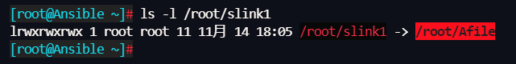
Shell > cd /home/paul/
Shell > ls –li letter
666 –rwxr--r-- 1 root root … letter
# The ln command does not add any options, indicating a hard link
Shell > ln /home/paul/letter /home/jack/read
# The essence of hard links is the file mapping of the same inode number in different directories.
Shell > ls –li /home/*/*
666 –rwxr--r-- 2 root root … letter
666 –rwxr--r-- 2 root root … read
# If you use a hard link to a directory, you will be prompted:
Shell > ln /etc/ /root/etc_hardlink
ln: /etc: hard link not allowed for directory
Attributi dei file
Linux è un sistema operativo multiutente in cui il controllo dell'accesso ai file è essenziale.
Questi controlli sono funzioni di:
- permessi di accesso ai file ;
- utenti (ugo Users Groups Others).
Permessi di base di file e directory
La descrizione dei permessi dei file è la seguente:
| Permessi dei file | Descrizione |
|---|---|
| r | Leggi. Consente la lettura di un file(cat, less, ...) e la copia di un file(cp, ...). |
| w | Scrivere. Consente di modificare il contenuto del file(cat, >>, vim, ...). |
| x | Eseguire. Considera il file come un file eseguibile(binario o script). |
| - | Nessun diritto |
La descrizione dei permessi delle directory è la seguente:
| Autorizzazioni delle directory | Descrizione |
|---|---|
| r | Leggi. Consente di leggere il contenuto di una directory(ls -R). |
| w | Scrivere. Permette di creare ed eliminare file/directory in questa directory, come i comandi mkdir, rmdir, rm, touch e così via. |
| x | Eseguire. Consente la discesa nella directory(cd). |
| - | Nessun diritto |
Informazione
Per i permessi di una directory, r e x di solito appaiono contemporaneamente. Lo spostamento o la ridenominazione di un file dipende dal fatto che la directory in cui si trova il file abbia il permesso w, così come l'eliminazione di un file.
Tipo di utente corrispondente all'autorizzazione di base
| Tipo utente | Descrizione |
|---|---|
| u | Proprietario |
| g | Gruppo proprietario |
| o | Altri utenti |
Informazione
In alcuni comandi è possibile designarli tutti con a (all). a = ugo.
Gestione degli attributi
La visualizzazione dei diritti si effettua con il comando ls -l. Si tratta degli ultimi 9 caratteri di un blocco di 10. Più precisamente 3 volte 3 caratteri.
[root]# ls -l /tmp/myfile
-rwxrw-r-x 1 root sys ... /tmp/myfile
1 2 3 4 5
| Parte | Descrizione |
|---|---|
| 1 | Permessi del proprietario (user), qui rwx |
| 2 | Permessi del gruppo proprietario (group), qui rw- |
| 3 | Permessi di altri utenti (others), qui r-x |
| 4 | Proprietario del file |
| 5 | Gruppo proprietario del file |
Per impostazione predefinita, il proprietario di un file è colui che lo ha creato. Il gruppo del file è il gruppo del proprietario che ha creato il file. Gli altri sono quelli che non rientrano nei casi precedenti.
Gli attributi vengono modificati con il comando chmod.
Solo l'amministratore e il proprietario di un file possono modificarne i diritti.
comando chmod
Il comando chmod consente di modificare i permessi di accesso a un file.
chmod [opzione] modalità file
| Opzione | Osservazione |
|---|---|
-R |
Modifica ricorsivamente i permessi della directory e di tutti i file in essa contenuti. |
Attenzione
I diritti dei file e delle directory non sono dissociati. Per alcune operazioni, sarà necessario conoscere i diritti della directory contenente il file. Un file protetto da scrittura può essere cancellato da un altro utente, purché i diritti della directory che lo contiene consentano a questo utente di eseguire questa operazione.
L'indicazione della modalità può essere una rappresentazione ottale (ad esempio 744) o una rappresentazione simbolica ([ugoa][+=-][rwxst]).
Rappresentazione ottale (o numerica):
| Numero | Descrizione |
|---|---|
| 4 | r |
| 2 | s |
| 1 | x |
| 0 | - |
Sommare i tre numeri per ottenere un'autorizzazione di tipo utente. ad es. 755=rwxr-xr-x.
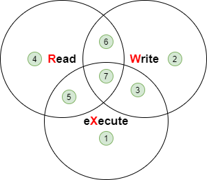
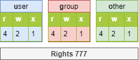
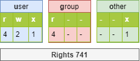
Informazione
A volte si vedrà chmod 4755. Il numero 4 si riferisce al permesso speciale set uid. I permessi speciali non verranno per il momento ampliati in questa sede, ma solo come nozioni di base.
[root]# ls -l /tmp/fil*
-rwxrwx--- 1 root root … /tmp/file1
-rwx--x--- 1 root root … /tmp/file2
-rwx--xr-- 1 root root … /tmp/file3
[root]# chmod 741 /tmp/file1
[root]# chmod -R 744 /tmp/file2
[root]# ls -l /tmp/fic*
-rwxr----x 1 root root … /tmp/file1
-rwxr--r-- 1 root root … /tmp/file2
rappresentazione simbolica
Questo metodo può essere considerato come un'associazione "letterale" tra un tipo di utente, un operatore e i diritti.
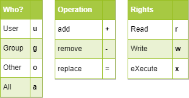
[root]# chmod -R u+rwx,g+wx,o-r /tmp/file1
[root]# chmod g=x,o-r /tmp/file2
[root]# chmod -R o=r /tmp/file3
Diritti predefiniti e maschera
Quando un file o una directory viene creata, ha già dei permessi.
- Per una directory:
rwxr-xr-xo 755. - Per un file:
rw-r-r-o 644.
Questo comportamento è definito dalla maschera predefinita.
Il principio è quello di rimuovere il valore definito dalla maschera al massimo dei diritti senza il diritto di esecuzione.
Per una directory :
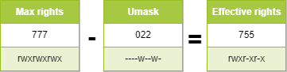
Per un file, i diritti di esecuzione vengono rimossi:
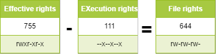
Informazione
Il file `/etc/login.defs' definisce l'UMASK predefinito, con un valore di 022. Ciò significa che il permesso di creare un file è 755 (rwxr-xr-x). Tuttavia, per motivi di sicurezza, GNU/Linux non prevede il permesso x per i file appena creati; questa restrizione si applica a root (uid=0) e agli utenti ordinari (uid>=1000).
# root user
Shell > touch a.txt
Shell > ll
-rw-r--r-- 1 root root 0 Oct 8 13:00 a.txt
comando umask
Il comando umask consente di visualizzare e modificare la maschera.
umask [opzione] [modalità]
Esempio:
$ umask 033
$ umask
0033
$ umask -S
u=rwx,g=r,o=r
$ touch umask_033
$ ls -la umask_033
-rw-r--r-- 1 architalia architalia 0 nov. 4 16:44 umask_033
$ umask 025
$ umask -S
u=rwx,g=rx,o=w
$ touch umask_025
$ ls -la umask_025
-rw-r---w- 1 architalia architalia 0 nov. 4 16:44 umask_025
| Opzione | Descrizione |
|---|---|
-S |
Visualizzazione simbolica dei diritti dei file. |
Attenzione
umask non influisce sui file esistenti. umask -S visualizza i diritti dei file (senza il diritto di esecuzione) dei file che verranno creati. Quindi, non è la visualizzazione della maschera utilizzata per sottrarre il valore massimo.
Nota
umask modifica la maschera fino alla disconnessione.
Informazione
Il comando umask appartiene ai comandi incorporati di bash, quindi quando si usa man umask, vengono visualizzati tutti i comandi incorporati. Se si desidera visualizzare solo la guida di umask, è necessario utilizzare il comando help umask.
Per mantenere il valore, è necessario modificare i seguenti file di profilo:
Per tutti gli utenti:
/etc/profile/etc/bashrc
Per un particolare utente:
~/.bashrc
Quando viene scritto il file di cui sopra, esso sovrascrive il parametro UMASK di /etc/login.defs. Se si desidera migliorare la sicurezza del sistema operativo, è possibile impostare umask a 027 o 077.